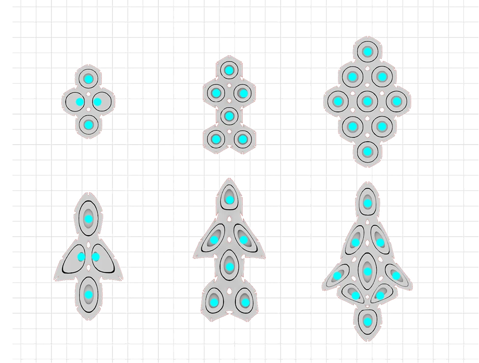

Watch the walkthrough
Watch the walkthrough
Inside the world01
Immerse yourself in a world made for wonder. A cinema at full scale, a skyline visible from anywhere inside it, and everything you could watch standing around you.
One continuous space rather than a set of pages. Every room has its own scale and its own light, and you move between them the way you move through a place. Learn it once and you always know where you are.
You already know this place. The screen, the hush before it starts, the lounge where everyone decides together. Step inside, choose your story, and let the room do the rest.
The project had to reflect the totality of the brand, and there was a first-mover opening: no streaming service had entered the metaverse. The industry is heading toward avatars roaming a cinema-like space, exploring titles with friends before settling on one to watch.
People are opting out of physical cinemas, but they are still social. The synchronised-playback services that try to serve that instinct are undone by latency, lag and access. A metacinema solves all three at once. Disney had the legacy to be first.
Watch the walkthrough
Nature runs one algorithm and gets endless variety. We design the same way, so a client is not shown a single proposal but a family of typologies that share an ethos and differ in behaviour. Each was scored on what actually matters later: can it scale, can it adapt, can it carry the brand.
An architect in the physical world reads site, topography, climate, landscape. None of that exists here. So the context is manufactured from the mood board, the brief and the brand, and then evolved: cellular mutation for variety, and function and navigability acting as natural selection.
The map stays intuitive because the urban fabric does the work: users locate and navigate by the grid, not by a menu.
Squares can only become parallelograms and trapeziums. A hexagon can become an unlimited number of shapes, which makes the cellular grid exponentially scalable, flexible and adaptable. Cell shape, size, position and proliferation are then decided by function and navigability.

Because the structure is malleable, no room has to compromise to fit a uniform form. Spatial coordination came out of design studies, performance analysis and costing. Ten spaces are configured: spawn point, gallery, info booth, screen, display unit, lounge, seating and three auditoriums.
Spawn points are birth canals: the first thing anyone experiences, so their location and angle matter more than almost anything else. In the physical world you walk from A to B. Here you do not have to, so teleportation becomes the default and arrival becomes designed. It is also the highest-traffic surface in the world, which makes it the most valuable place to put a brand.
This is the room, live. Move your pointer to look around it, then pick something up and go through.
A kingdom realm. Spires, mist and a score that rises as you walk in.
You are inside it, not looking at it. Drag to turn your head, scroll to move closer. The lounge stays behind you, one gesture away.
Open water and open map. The lounge dissolves into a horizon.
You are inside it, not looking at it. Drag to turn your head, scroll to move closer. The lounge stays behind you, one gesture away.
Hard light, deep black. A hangar deck instead of a floor.
You are inside it, not looking at it. Drag to turn your head, scroll to move closer. The lounge stays behind you, one gesture away.
Hand-drawn logic in three dimensions. Colour first, physics second.
You are inside it, not looking at it. Drag to turn your head, scroll to move closer. The lounge stays behind you, one gesture away.
A living realm, ambient and slow. Sound leads, geometry follows.
You are inside it, not looking at it. Drag to turn your head, scroll to move closer. The lounge stays behind you, one gesture away.
Each room was drawn before it was modelled: what is fixed, what is shareable, who can lock the door, how many it holds. Switch between them.
Branding integrates into the design of the space and into the media inside it: pictures, posters, 3D models, animations, text, links. Everything customisable, so the world reads as the brand rather than as a venue the brand rented.
Avatars interact with each other through movement, gesture, audio and chat, and with the world through everything else: clicking links, selecting options, playing with objects, changing colours and textures.
A metaverse environment is entirely synthetic, which makes biomimetics essential. We study genetic algorithms in nature and replicate the process, then push it with parameters. The result is psychologically settling in a place that would otherwise be overwhelming.
Environment generated, not drawn.
Geometry read back as data to steer the next pass.
Surfaces assigned across the whole cellular field.
Cut down until it holds frame rate in a browser.
“ Streaming asks you what you want to watch. We wanted the world to ask you where you want to go.